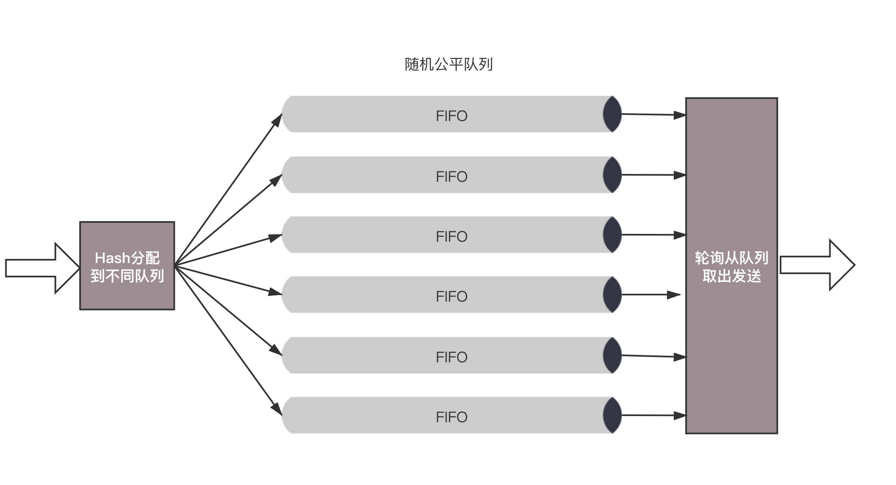

- 00 开篇词 想成为技术牛人？先搞定网络协议！.md.html
- 01 为什么要学习网络协议？.md.html
- 02 网络分层的真实含义是什么？.md.html
- 03 ifconfig：最熟悉又陌生的命令行.md.html
- 04 DHCP与PXE：IP是怎么来的，又是怎么没的？.md.html
- 05 从物理层到MAC层：如何在宿舍里自己组网玩联机游戏？.md.html
- 06 交换机与VLAN：办公室太复杂，我要回学校.md.html
- 07 ICMP与ping：投石问路的侦察兵.md.html
- 08 世界这么大，我想出网关：欧洲十国游与玄奘西行.md.html
- 09 路由协议：西出网关无故人，敢问路在何方.md.html
- 10 UDP协议：因性善而简单，难免碰到“城会玩”.md.html
- 11 TCP协议（上）：因性恶而复杂，先恶后善反轻松.md.html
- 12 TCP协议（下）：西行必定多妖孽，恒心智慧消磨难.md.html
- 13 套接字Socket：Talk is cheap, show me the code.md.html
- 14 HTTP协议：看个新闻原来这么麻烦.md.html
- 15 HTTPS协议：点外卖的过程原来这么复杂.md.html
- 16 流媒体协议：如何在直播里看到美女帅哥？.md.html
- 17 P2P协议：我下小电影，99%急死你.md.html
- 18 DNS协议：网络世界的地址簿.md.html
- 19 HttpDNS：网络世界的地址簿也会指错路.md.html
- 20 CDN：你去小卖部取过快递么？.md.html
- 21 数据中心：我是开发商，自己拿地盖别墅.md.html
- 22 VPN：朝中有人好做官.md.html
- 23 移动网络：去巴塞罗那，手机也上不了脸书.md.html
- 24 云中网络：自己拿地成本高，购买公寓更灵活.md.html
- 25 软件定义网络：共享基础设施的小区物业管理办法.md.html
- 26 云中的网络安全：虽然不是土豪，也需要基本安全和保障.md.html
- 27 云中的网络QoS：邻居疯狂下电影，我该怎么办？.md.html
- 28 云中网络的隔离GRE、VXLAN：虽然住一个小区，也要保护隐私.md.html
- 29 容器网络：来去自由的日子，不买公寓去合租.md.html
- 30 容器网络之Flannel：每人一亩三分地.md.html
- 31 容器网络之Calico：为高效说出善意的谎言.md.html
- 32 RPC协议综述：远在天边，近在眼前.md.html
- 33 基于XML的SOAP协议：不要说NBA，请说美国职业篮球联赛.md.html
- 34 基于JSON的RESTful接口协议：我不关心过程，请给我结果.md.html
- 35 二进制类RPC协议：还是叫NBA吧，总说全称多费劲.md.html
- 36 跨语言类RPC协议：交流之前，双方先来个专业术语表.md.html
- 37 知识串：用双十一的故事串起碎片的网络协议（上）.md.html
- 38 知识串：用双十一的故事串起碎片的网络协议（中）.md.html
- 39 知识串：用双十一的故事串起碎片的网络协议（下）.md.html
- 40 搭建一个网络实验环境：授人以鱼不如授人以渔.md.html
- 加餐1 创作故事：我是如何创作“趣谈网络协议”专栏的？.md.html
- 协议专栏特别福利 答疑解惑1期.md.html
- 协议专栏特别福利 答疑解惑2期.md.html
- 协议专栏特别福利 答疑解惑3期.md.html
- 协议专栏特别福利 答疑解惑4期.md.html
- 协议专栏特别福利 答疑解惑5期.md.html
- 结束语 放弃完美主义，执行力就是限时限量认真完成.md.html
- 捐赠
27 云中的网络QoS：邻居疯狂下电影，我该怎么办？
在小区里面，是不是经常有住户不自觉就霸占公共通道，如果你找他理论，他的话就像一个相声《楼道曲》说的一样：“公用公用，你用我用，大家都用，我为什么不能用？”。
除此之外，你租房子的时候，有没有碰到这样的情况：本来合租共享WiFi，一个人狂下小电影，从而你网都上不去，是不是很懊恼？
在云平台上，也有这种现象，好在有一种流量控制的技术，可以实现QoS（Quality of Service），从而保障大多数用户的服务质量。
对于控制一台机器的网络的QoS，分两个方向，一个是入方向，一个是出方向。

其实我们能控制的只有出方向，通过Shaping，将出的流量控制成自己想要的模样。而进入的方向是无法控制的，只能通过Policy将包丢弃。
控制网络的QoS有哪些方式？
在Linux下，可以通过TC控制网络的QoS，主要就是通过队列的方式。
无类别排队规则
第一大类称为无类别排队规则（Classless Queuing Disciplines）。还记得我们讲[ip addr]的时候讲过的pfifo_fast，这是一种不把网络包分类的技术。
pfifo_fast分为三个先入先出的队列，称为三个Band。根据网络包里面TOS，看这个包到底应该进入哪个队列。TOS总共四位，每一位表示的意思不同，总共十六种类型。
通过命令行tc qdisc show dev eth0，可以输出结果priomap，也是十六个数字。在0到2之间，和TOS的十六种类型对应起来，表示不同的TOS对应的不同的队列。其中Band 0优先级最高，发送完毕后才轮到Band 1发送，最后才是Band 2。
另外一种无类别队列规则叫作随机公平队列（Stochastic Fair Queuing）。

会建立很多的FIFO的队列，TCP Session会计算hash值，通过hash值分配到某个队列。在队列的另一端，网络包会通过轮询策略从各个队列中取出发送。这样不会有一个Session占据所有的流量。
当然如果两个Session的hash是一样的，会共享一个队列，也有可能互相影响。hash函数会经常改变，从而session不会总是相互影响。
还有一种无类别队列规则称为令牌桶规则（TBF，Token Bucket Filte）。

所有的网络包排成队列进行发送，但不是到了队头就能发送，而是需要拿到令牌才能发送。
令牌根据设定的速度生成，所以即便队列很长，也是按照一定的速度进行发送的。
当没有包在队列中的时候，令牌还是以既定的速度生成，但是不是无限累积的，而是放满了桶为止。设置桶的大小为了避免下面的情况：当长时间没有网络包发送的时候，积累了大量的令牌，突然来了大量的网络包，每个都能得到令牌，造成瞬间流量大增。
基于类别的队列规则
另外一大类是基于类别的队列规则（Classful Queuing Disciplines），其中典型的为分层令牌桶规则（HTB， Hierarchical Token Bucket）。
HTB往往是一棵树，接下来我举个具体的例子，通过TC如何构建一棵HTB树来带你理解。
使用TC可以为某个网卡eth0创建一个HTB的队列规则，需要付给它一个句柄为（1:）。
这是整棵树的根节点，接下来会有分支。例如图中有三个分支，句柄分别为（:10）、（:11）、（:12）。最后的参数default 12，表示默认发送给1:12，也即发送给第三个分支。
tc qdisc add dev eth0 root handle 1: htb default 12
对于这个网卡，需要规定发送的速度。一般有两个速度可以配置，一个是rate，表示一般情况下的速度；一个是ceil，表示最高情况下的速度。对于根节点来讲，这两个速度是一样的，于是创建一个root class，速度为（rate=100kbps，ceil=100kbps）。
tc class add dev eth0 parent 1: classid 1:1 htb rate 100kbps ceil 100kbps
接下来要创建分支，也即创建几个子class。每个子class统一有两个速度。三个分支分别为（rate=30kbps，ceil=100kbps）、（rate=10kbps，ceil=100kbps）、（rate=60kbps，ceil=100kbps）。
tc class add dev eth0 parent 1:1 classid 1:10 htb rate 30kbps ceil 100kbps
tc class add dev eth0 parent 1:1 classid 1:11 htb rate 10kbps ceil 100kbps
tc class add dev eth0 parent 1:1 classid 1:12 htb rate 60kbps ceil 100kbps
你会发现三个rate加起来，是整个网卡允许的最大速度。
HTB有个很好的特性，同一个root class下的子类可以相互借流量，如果不直接在队列规则下面创建一个root class，而是直接创建三个class，它们之间是不能相互借流量的。借流量的策略，可以使得当前不使用这个分支的流量的时候，可以借给另一个分支，从而不浪费带宽，使带宽发挥最大的作用。
最后，创建叶子队列规则，分别为fifo和sfq。
tc qdisc add dev eth0 parent 1:10 handle 20: pfifo limit 5
tc qdisc add dev eth0 parent 1:11 handle 30: pfifo limit 5
tc qdisc add dev eth0 parent 1:12 handle 40: sfq perturb 10
基于这个队列规则，我们还可以通过TC设定发送规则：从1.2.3.4来的，发送给port 80的包，从第一个分支1:10走；其他从1.2.3.4发送来的包从第二个分支1:11走；其他的走默认分支。
tc filter add dev eth0 protocol ip parent 1:0 prio 1 u32 match ip src 1.2.3.4 match ip dport 80 0xffff flowid 1:10
tc filter add dev eth0 protocol ip parent 1:0 prio 1 u32 match ip src 1.2.3.4 flowid 1:11
如何控制QoS？
我们讲过，使用OpenvSwitch将云中的网卡连通在一起，那如何控制QoS呢？
就像我们上面说的一样，OpenvSwitch支持两种：
对于进入的流量，可以设置策略Ingress policy；
ovs-vsctl set Interface tap0 ingress_policing_rate=100000 ovs-vsctl set Interface tap0 ingress_policing_burst=10000
对于发出的流量，可以设置QoS规则Egress shaping，支持HTB。
我们构建一个拓扑图，来看看OpenvSwitch的QoS是如何工作的。
首先，在port上可以创建QoS规则，一个QoS规则可以有多个队列Queue。
ovs-vsctl set port first_br qos=@newqos -- --id=@newqos create qos type=linux-htb other-config:max-rate=10000000 queues=0=@q0,1=@q1,2=@q2 -- --id=@q0 create queue other-config:min-rate=3000000 other-config:max-rate=10000000 -- --id=@q1 create queue other-config:min-rate=1000000 other-config:max-rate=10000000 -- --id=@q2 create queue other-config:min-rate=6000000 other-config:max-rate=10000000
上面的命令创建了一个QoS规则，对应三个Queue。min-rate就是上面的rate，max-rate就是上面的ceil。通过交换机的网络包，要通过流表规则，匹配后进入不同的队列。然后我们就可以添加流表规则Flow(first_br是br0上的port 5)。
ovs-ofctl add-flow br0 "in_port=6 nw_src=192.168.100.100 actions=enqueue:5:0"
ovs-ofctl add-flow br0 "in_port=7 nw_src=192.168.100.101 actions=enqueue:5:1"
ovs-ofctl add-flow br0 "in_port=8 nw_src=192.168.100.102 actions=enqueue:5:2"
接下来，我们单独测试从192.168.100.100，192.168.100.101，192.168.100.102到192.168.100.103的带宽的时候，每个都是能够打满带宽的。
如果三个一起测试，一起狂发网络包，会发现是按照3:1:6的比例进行的，正是根据配置的队列的带宽比例分配的。
如果192.168.100.100和192.168.100.101一起测试，发现带宽占用比例为3:1，但是占满了总的流量，也即没有发包的192.168.100.102有60%的带宽被借用了。
如果192.168.100.100和192.168.100.102一起测试，发现带宽占用比例为1:2。如果192.168.100.101和192.168.100.102一起测试，发现带宽占用比例为1:6。
小结
好了，这一节就讲到这里了，我们来总结一下。
云中的流量控制主要通过队列进行的，队列分为两大类：无类别队列规则和基于类别的队列规则。
在云中网络Openvswitch中，主要使用的是分层令牌桶规则（HTB），将总的带宽在一棵树上按照配置的比例进行分配，并且在一个分支不用的时候，可以借给另外的分支，从而增强带宽利用率。
最后，给你留两个思考题。
这一节中提到，入口流量其实没有办法控制，出口流量是可以很好控制的，你能想出一个控制云中的虚拟机的入口流量的方式吗？
安全性和流量控制大概解决了，但是不同用户在物理网络的隔离还是没有解决，你知道怎么解决吗？
我们的专栏更新到第27讲，不知你掌握得如何？每节课后我留的思考题，你都有没有认真思考，并在留言区写下答案呢？我会从已发布的文章中选出一批认真留言的同学，赠送学习奖励礼券和我整理的独家网络协议知识图谱。
欢迎你留言和我讨论。趣谈网络协议，我们下期见！
© 2019 - 2023 Liangliang Lee. Powered by gin and hexo-theme-book.